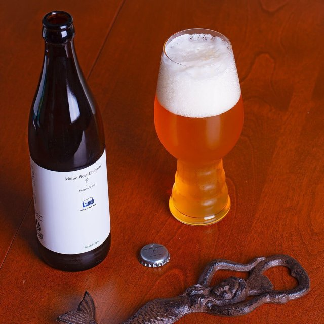

HOME
OUR PICKS
Lunch IPA
Maine Beer Company
Lunch is a special whale that has been spotted off the Maine coast since 1982. She has what looks like a bite taken out of her fin, which adds to her unique character. Maine Beer dedicates this beer to her determination and persistence The flavor profile consists of orange, grapefruit, and lemon, with pine and herbal undertones, tropical notes of guava and papaya with subtle caramel and malt sweetness.
Located in Freeport, ME, the Maine Beer Company porduces American-style ales served in a tasting room with windows into the facility where they're produced. Their moto since the beginning has been: "Do what's right. Make great beer. Have fun."
Check out their site HERE 